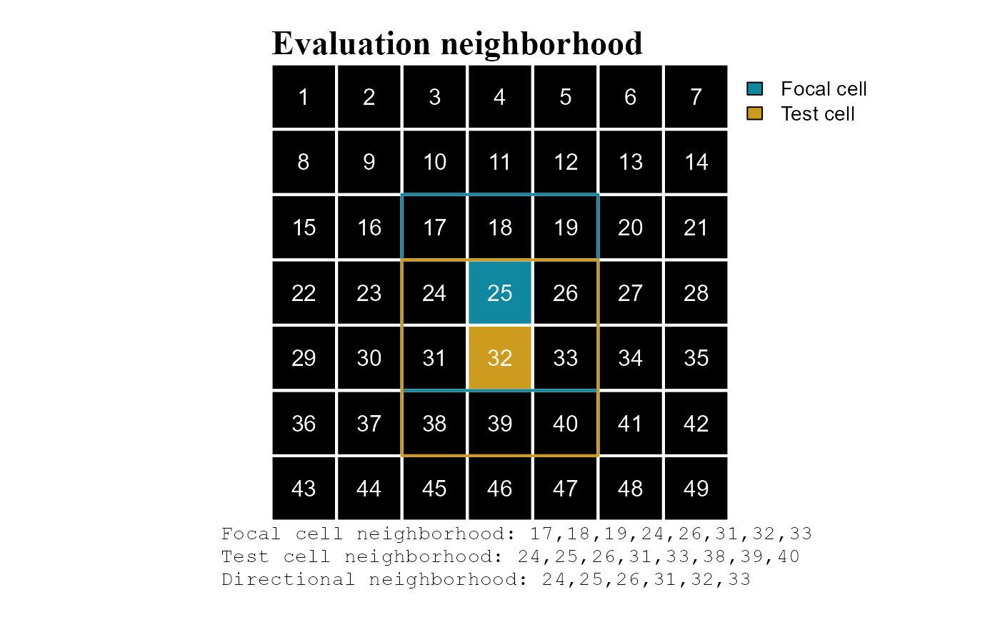

Rule evaluation and types
Gerald H. Taranto
Wed 09, March, 2022
Source:vignettes/articles/scapesClassification_01_2_RulesEvalTypes.Rmd
scapesClassification_01_2_RulesEvalTypes.RmdRule evaluation
One of the differences between scapesClassification and other raster classification software is the way classification rules are evaluated. As presented in the next paragraphs, most of the package functions present a focal evaluation of classification rules.
A second major difference is in the diversity of relative and absolute conditions that scapesClassification functions can evaluate.
Evaluation neighborhood
(scapes)Classifications take into account the spatial relationships existing among distinct groups of cells (class contiguity and continuity). The evaluation neighborhood, in which focal evaluations take place, is composed of the following elements (Figure 1):
Focal cell. Cell whose neighbors are evaluated against the classification rule(s).
Test cell. Cell in the neighborhood of the focal cell that is being tested. At turns all cells in the neighborhood of a focal cell are tested against the classification rule(s).
Focal and test cells neighborhoods. The neighborhoods of focal and test cells (see cell neighborhoods).
Directional neighborhood. The set of cells included both in the focal and in the test cell neighborhoods.

Global evaluation
Global evaluation functions: cond.4.all().
Classification rules are applied to all raster cells regardless of their position on the raster (Figure 2). Global evaluations are not very common in scapesClassification.
Focal evaluation
Focal evaluation functions: anchor.seed(), cond.4.nofn(), cond.reclass(), reclass.nbs() and classify.all().
Classification rules are only tested at specific positions on a raster. The positions where rules are tested are identified based on their contiguity or continuity to focal cells.
Class contiguity
Classification rules are applied only to raster cells in the neighborhood of focal cells (Figure 3).

Class continuity
Classification rules are applied to raster cells in the neighborhood of focal cells. Focal cells are updated at each iteration; test cells classified in one iteration become the focal cells of the next iteration. In this way, cells that respect the same rule(s) and that are connected the same focal cells are joined into the same class (Figure 4).

Classification rules
In the context of scapesClassification, classification rules have the following characteristics:
Evaluate either to true or false and determine what raster cells have to be classified;
Can be absolute (compare cell values against a threshold value) or relative (compare among the values of different cells);
Can consider any variable included in the attribute table (see
attTbl()and format inputs);Variables are accessed by column name;
Are presented to individual functions in the form of a single character string.
A detailed explanation about conditions and classification workflow in scapesClassification is included in the documentation of the function ?conditions.
In the following examples conditions are evaluated based on focal evaluations that consider only class contiguity.
Absolute conditions
Absolute conditions compare cell values against a threshold value. There are two types of absolute conditions (Figure 5):
Absolute test cell condition: compares test cell values against a threshold value.
-
Absolute neighborhood condition: compares the values of the test cell and of its neighborhood against a threshold value.
An absolute neighborhood condition is identified by a variable name followed by curly brackets;
A maximum of 9 evaluations are performed for each test cell (threshold value vs. test cell and its 8-neighbors; note that a cell can have less than 8 valid neighbors, format inputs);
Test cells receive a classification number if the rule is true for at least as many evaluations as the ones specified by the argument
peval(i.e., positive evaluations).
>=3. (b) Test cells are classified if among the values of the test cell and of the test cell neighborhood at least 8/9 (peval = 8/9) are >=3. Test cells are cells in the focal cell neighborhood (blue line). Positive evaluations are showed in dark green, negative evaluations in dark red.
Relative conditions
Relative conditions compare among the values of different cells. There are two types of relative conditions (Figure 6):
-
Relative focal cell condition: compares the test cell value against the focal cell value.
A relative focal cell condition is identified by a variable name followed by square brackets;
The variable name is repeated twice, once with square brackets and once without. Square brackets indicate the focal cell value.
-
Relative neighborhood condition: compares the values of the test cell against the values of the test cell neighborhood.
A relative neighborhood condition is identified by a variable name followed by curly brackets;
The variable name is repeated twice, once with curly brackets and once without. Curly brackets indicate the test cell neighborhood.
A maximum of 8 evaluations are performed for each test cell (test cell vs. 8 neighbors; note that a cell can have less than 8 valid neighbors, format inputs);
Test cells receive a classification number if the rule is true for at least as many evaluations as the ones specified by the argument
peval(i.e., positive evaluations).
<2. (b) Test cells are classified if at least 7 absolute differences between a test cell and the cells in its neighborhood are <2 (peval = 7/8). Test cells are cells in the focal cell neighborhood (blue line). Positive evaluations are showed in dark green, negative evaluations in dark red. In (b) are showed only the evaluation of the classified test cell.